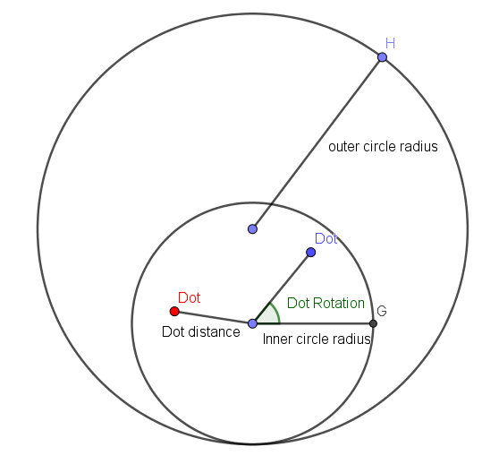

Instructions and Terms explained

Note: Number of circulations required to complete a closed circe = (the least common multiple of the outer circle radius and inner circle radius) / outer circle radius
Generally, the greater the common factor, the less complicated the graph will be.